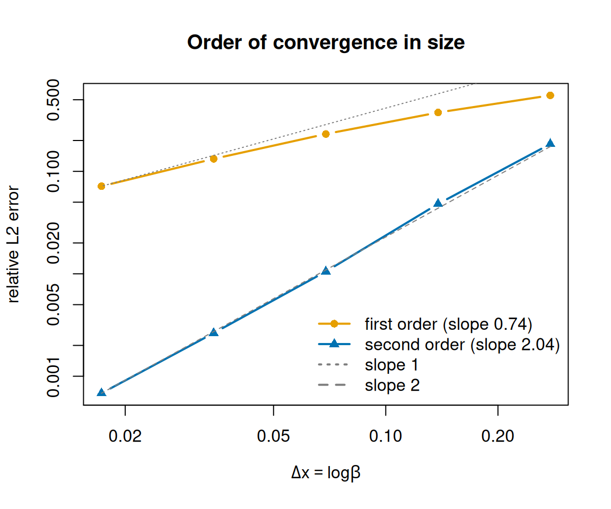
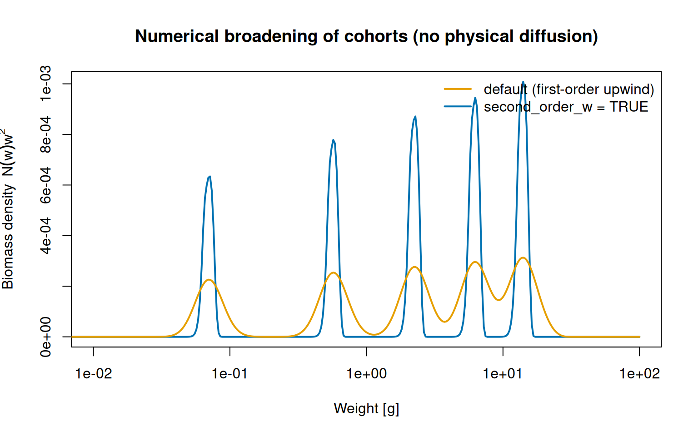
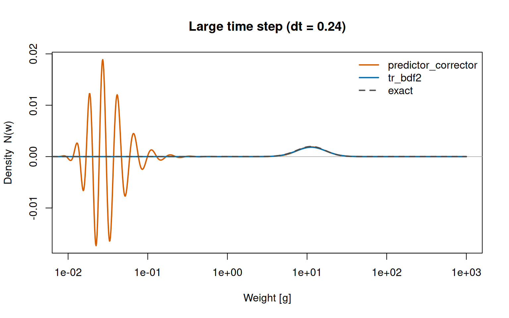

An experimental second-order accurate numerical scheme in size, a new L-stable time-stepper, and a long-overdue clarification of the maximum-size parameters.
Author
Gustav Delius
Published
June 24, 2026
We are pleased to announce the release of mizer 3.1. Coming so soon after the big 3.0 release, this is a more focused update: its centrepiece is an experimental, opt-in numerical scheme that makes mizer second-order accurate in the size variable, backed up by a new time-stepping method. Alongside the numerics there is a clarification of how mizer handles the various “maximum size” parameters, plus the usual collection of smaller improvements and bug fixes.
If you do nothing differently, your results will not change: the new accuracy features are switched off by default and the default code path is byte-for-byte identical to mizer 3.0.
Experimental: second-order accuracy in size
mizer solves the size-spectrum (McKendrick–von Foerster) equation on a logarithmic grid of size bins using a finite-volume method. Historically that method has been first order in the bin width: halving the bin width roughly halves the discretisation error. That is robust and fast, but on the coarse grids people often use it can introduce a visible bias — most noticeably a small shift in size-integrated quantities such as biomass, yield and SSB.
mizer 3.1.0 introduces an experimental second-order finite-volume scheme. The idea is to stop point-sampling quantities at the left edge of each size bin and instead use their exact (or trapezoidal) average over the bin, so that sinks, sources, fluxes and diagnostics are all consistent with the finite-volume interpretation of the abundance as a cell average. With it switched on, halving the bin width quarters the error.
It is controlled by a single new slot, accessed with second_order_w():
# Turn on the full second-order schemesecond_order_w(params)<-TRUE# Or control the two ingredients independentlysecond_order_w(params)<-c(flux ="centred", bin_average =TRUE)
There are two ingredients, and a fully second-order run wants both:
bin_average replaces every point-sampled power law and quadrature that feeds the update — external mortality and diffusion, the resource growth rate and capacity, the predation kernels, gear selectivity and the reproductive investment — with its exact bin average. The summary integrals (getBiomass(), getSSB(), getYield(), …) and the size-resolved mortalities are likewise weighted and placed consistently, the latter now reported at the geometric bin centre where a bin average actually lives.
flux chooses the advective reconstruction for the growth term: "van_leer" is a TVD scheme that stays second order while keeping abundances non-negative, and "centred" is genuinely second order even at peaks and troughs.
It is one thing to claim second-order accuracy and another to measure it. mizer ships with an analytic test vignette that solves the transport equation exactly for power-law rates, so we can compare the numerical solution against a known answer. The figure below — adapted from that vignette — projects a travelling, diffusing pulse on grids of increasing resolution and plots the relative error against the (logarithmic) grid spacing Δx, once with the default first-order scheme and once with second_order_w <- TRUE.
Show the code
library(mizer)# Power-law rates with an exact time-dependent (advecting, diffusing, decaying)# solution. See the analytic_test vignette for the derivation.p<-0.7; A<-1; B<-0.5; K<-0.1w0<-1e-2; t_start<-0.1; t_end<-2# Growth rate g(w) = A w^p, supplied as a custom rate function.start_growth<-function(params, ...)matrix(A*params@w^p, nrow =1)# Exact pulse N(w, t): a Green's function of the transport equation.N_analytic<-function(w, t, w0, t0, K_eff=K){U<-A-0.5*K_eff; V<-0.5*K_eff*(1-p); b<-B/(1-p)nu<-sqrt((U/V)^2+4*b/V)dt<-t-t0x<-w^(1-p)/(1-p); x0<-w0^(1-p)/(1-p)z<-2*sqrt(x*x0)/(V*dt)log_N<--log(V*dt)+(U/(2*V))*log(x/x0)-(x+x0)/(V*dt)+z+log(besselI(z, nu, expon.scaled =TRUE))exp(log_N)*w^(-p)}# Single-species model with these rates, optionally second order in size.build_sp<-function(no_w, second_order){sp<-data.frame(species ="Test", w_max =1000, w_mat =100, n =p, z0 =0, z_ext =B, d =p-1, D_ext =K)pr<-newMultispeciesParams(sp, no_w =no_w, min_w =1e-3, info_level =0)second_order_w(pr)<-second_orderpr<-setRateFunction(pr, "EGrowth", "start_growth")pr@interaction[]<-0# mortality is purely B w^(p-1)pr<-setExtMort(pr)pr@species_params$constant_reproduction<-0setRateFunction(pr, "RDD", "constantRDD")}# In the second-order scheme N_j is the cell *average* (≈ value at the cell# centre); in the first-order scheme it is the node value.ref_w<-function(pr, second_order){wv<-w(pr)if(second_order)wv*sqrt(wv[2]/wv[1])elsewv}# Relative L2 error of the projected pulse, restricted to its bulk.pulse_err<-function(no_w, second_order, dt=0.0025){pr<-build_sp(no_w, second_order)rw<-ref_w(pr, second_order)initialN(pr)<-matrix(N_analytic(rw, t_start, w0, 0), nrow =1)sim<-project(pr, t_max =t_end-t_start, dt =dt, t_save =t_end-t_start, method ="tr_bdf2", progress_bar =FALSE)num<-finalN(sim)[1, ]; ana<-N_analytic(rw, t_end, w0, 0)mask<-ana>max(ana)*1e-3sqrt(sum((num[mask]-ana[mask])^2*pr@dw[mask])/sum(ana[mask]^2*pr@dw[mask]))}no_ws<-c(50, 100, 200, 400, 800)dx<-log(1000/1e-3)/no_ws# log-size grid spacingerr_first<-sapply(no_ws, pulse_err, second_order =FALSE)err_second<-sapply(no_ws, pulse_err, second_order =TRUE)sp_order<-function(e)unname(coef(lm(log(e)~log(dx)))[2])plot(dx, err_first, log ="xy", type ="b", pch =16, lwd =2, col ="#E69F00", xlab =expression(Delta*x==log*beta), ylab ="relative L2 error", ylim =range(err_first, err_second), main ="Order of convergence in size")lines(dx, err_second, type ="b", pch =17, lwd =2, col ="#0072B2")i0<-length(dx)lines(dx, err_first[i0]*(dx/dx[i0])^1, lty =3, col ="grey50")lines(dx, err_second[i0]*(dx/dx[i0])^2, lty =2, col ="grey50")legend("bottomright", bty ="n", legend =c(sprintf("first order (slope %.2f)", sp_order(err_first)),sprintf("second order (slope %.2f)", sp_order(err_second)),"slope 1", "slope 2"), col =c("#E69F00", "#0072B2", "grey50", "grey50"), pch =c(16, 17, NA, NA), lty =c(1, 1, 3, 2), lwd =2)

Relative L2 error of a projected pulse versus grid spacing. The default scheme converges roughly linearly (slope-1 guide line); the experimental second-order scheme follows slope 2 and is up to ~100x more accurate over the range of resolutions shown.
The default scheme converges only linearly: its error falls roughly in step with the slope-1 guide line, so halving the grid spacing roughly halves the error (the coarsest grids here are still pre-asymptotic, which is why the fitted slope sits a little below 1). The experimental scheme follows the slope-2 line — about four times more accurate for every halving of Δx — so it pulls away fast: from a few times more accurate on the coarsest grid to roughly a hundredfold more accurate on the finest grid shown.
What the error looks like: numerical diffusion
That abstract error norm has a very concrete consequence. A first-order upwind scheme does not merely lose accuracy — it injects numerical diffusion, an artificial smearing that imitates the individual growth variability mizer models with its diffusion term, except that here it is a numerical artefact rather than biology. We can watch it happen by following annual cohorts. Driving the model with a once-a-year pulse of reproduction (as in the cohort dynamics vignette) and switching physical diffusion off, every individual born together grows together, so each cohort should stay a sharp spike for life. Any broadening we see is the numerics talking, not the model.
Show the code
# Pulsed annual reproduction: one sharp cohort per year.pulse_width<-0.1annual_pulse_RDD<-function(rdi, species_params, t, ...){frac<-t%%1if(frac<pulse_width){rdd<-rdirdd[]<-1-cos(frac/pulse_width*2*pi)rdd}else0*rdi}run_cohorts<-function(second_order){pr<-newSingleSpeciesParams(h =10, no_w =400)pr<-setRateFunction(pr, "RDD", "annual_pulse_RDD")initialN(pr)[]<-0# start from an empty spectrumsecond_order_w(pr)<-second_order# physical diffusion stays offproject(pr, t_max =5, dt =0.005, t_save =0.05, method ="tr_bdf2", progress_bar =FALSE)}sim_first<-run_cohorts(FALSE)# default first-order upwind fluxsim_second<-run_cohorts(TRUE)# second-order schemewv<-w(sim_first@params)b_first<-finalN(sim_first)[1, ]*wv^2b_second<-finalN(sim_second)[1, ]*wv^2plot(wv, b_second, type ="l", log ="x", lwd =2, col ="#0072B2", xlim =c(1e-2, 1e2), xlab ="Weight [g]", ylab =expression(Biomass~density~~N(w)*w^2), main ="Numerical broadening of cohorts (no physical diffusion)")lines(wv, b_first, lwd =2, col ="#E69F00")legend("topright", bty ="n", lwd =2, col =c("#E69F00", "#0072B2"), legend =c("default (first-order upwind)", "second_order_w = TRUE"))

Five annual cohorts grown with no physical diffusion, so any spreading is purely numerical. The default first-order upwind scheme smears the cohorts into low, broad, merging humps; the second-order scheme keeps each one tall and sharp.
With the default upwind flux the cohorts bleed into low, broad humps and the oldest are already merging — even though nothing in the model is making them spread. The second-order scheme keeps each cohort roughly three times taller and correspondingly narrower, so the genuine signal is no longer drowned in numerical diffusion. The practical pay-off: when you do switch real diffusion on, the cohort widths you measure reflect the biology you put in rather than the grid you happened to choose.
One caveat worth repeating: because bin-averaging corrects an O(Δw) bias, turning it on will shift your reported biomass, yield and resource spectrum slightly (more on coarse grids). A model that was carefully calibrated under the first-order scheme may therefore need recalibrating. That is precisely why the feature is opt-in and flagged experimental. The new “Numerical Details” vignette and the analytic test vignette go through the mathematics and the convergence tests in full.
A new L-stable time-stepper
On the time axis, mizer 3.0.0 already offered a second-order "predictor_corrector" method alongside the default "euler". The Crank–Nicolson corrector it uses, however, can ring at large time steps. mizer 3.1.0 adds method = "tr_bdf2", an L-stable TR-BDF2 scheme that keeps the second-order accuracy while damping those oscillations — and, like every mizer time-stepper, still only needs tridiagonal solves.
What does “ringing” look like, and why does L-stability cure it? The Crank–Nicolson corrector is only neutrally stable for stiff modes: instead of damping the sharp, high-frequency features it cannot resolve at a large step, it reflects them back as oscillations. We can provoke it with the same travelling pulse as above (reusing the exact solution N_analytic() and growth rate start_growth() defined earlier) but taking a deliberately large step, dt = 0.24.
Show the code
# Build the analytic-test pulse model (rates from the earlier chunk).start_mort<-function(params, ...)matrix(B*params@w^(p-1), nrow =1)pr<-newMultispeciesParams(data.frame(species ="Test", w_max =1000, w_mat =100), no_w =1000, min_w =1e-3, info_level =0)pr<-setRateFunction(pr, "EGrowth", "start_growth")pr<-setRateFunction(pr, "Mort", "start_mort")ext_diffusion(pr)[1, ]<-K*w(pr)^(p+1)pr@species_params$constant_reproduction<-0pr<-setRateFunction(pr, "RDD", "constantRDD")wv<-w(pr)initialN(pr)<-matrix(N_analytic(wv, t_start, w0, 0), nrow =1)elapsed<-6.4dt_big<-0.24# a deliberately large stepfinal_n<-function(method)finalN(project(pr, t_max =elapsed, dt =dt_big, t_save =elapsed, method =method, progress_bar =FALSE))[1, ]n_pc<-final_n("predictor_corrector")n_tb<-final_n("tr_bdf2")n_ex<-N_analytic(wv, t_start+elapsed, w0, 0)plot(wv, n_pc, type ="l", log ="x", lwd =2, col ="#D55E00", ylim =range(n_pc, n_tb), xlim =c(1e-2, 1e3), xlab ="Weight [g]", ylab ="Density N(w)", main =sprintf("Large time step (dt = %.2f)", dt_big))abline(h =0, col ="grey70")lines(wv, n_tb, lwd =2, col ="#0072B2")lines(wv, n_ex, lwd =2, lty =2, col ="grey30")legend("topright", bty ="n", lwd =2, lty =c(1, 1, 2), col =c("#D55E00", "#0072B2", "grey30"), legend =c("predictor_corrector", "tr_bdf2", "exact"))

At a large time step the Crank–Nicolson corrector of predictor_corrector rings, throwing off spurious oscillations into negative densities near the sharp recruitment boundary, while the L-stable tr_bdf2 stays glued to the exact solution.
The true solution is the small bump on the right, where the pulse has grown to. predictor_corrector reproduces that bump but also spews oscillations an order of magnitude larger across the small-size end, swinging the density well below zero — unphysical, and a recipe for instability if fed back through the nonlinear rates. tr_bdf2 damps exactly those modes and tracks the exact solution everywhere. (Both methods are equally accurate once the step is small enough; the difference is purely a large-step robustness one, explored further in the “Numerical Details” vignette.)
Under both second-order time methods the resource and any extra ecosystem components are now advanced to second-order accuracy in time as well, rather than being left at first order.
Clarifying the maximum-size parameters
mizer has long carried three parameters that all sound like “the maximum size”, and over the years they have meant subtly different things. mizer 3.1.0 settles their roles. To explain why the dust kept getting unsettled, it helps to recall the history (see issue #325):
In mizer 1.0 there was a single maximum-size parameter, w_inf. It was both the size at which growth stopped and the size beyond which no fish could exist, and people were encouraged to set it to the von Bertalanffy asymptotic size.
In mizer 2.0 we noticed that real populations contain fish larger than the von Bertalanffy w_inf, so w_max was introduced as the true ceiling — the size at which growth stops and beyond which there are no fish. Existing models had w_inf renamed to w_max, and von Bertalanffy curves were discouraged.
Late in the 2.x series we realised that growth diffusion lets some individuals push past the size at which the deterministic growth rate hits zero. So w_repro_max was introduced for “the size at which mature fish invest everything in reproduction”, and w_max started to retreat into being a purely computational boundary.
In mizer 3.0 diffusion became fully integrated, von Bertalanffy growth rates returned as the standard way to constrain growth, and we became quite comfortable with fish living beyond the von Bertalanffy asymptotic size — because diffusion is exactly how they get there.
That history left w_max doing far too many unrelated jobs and w_inf demoted to a plotting aid. mizer 3.1.0 puts each parameter back in its place:
w_inf, the von Bertalanffy asymptotic size, is once again the first-class, required maximum-size parameter, and supplies the default for w_repro_max and w_mat.
w_repro_max is only the size at which a typical mature individual invests all its energy in reproduction. It is not a hard ceiling on size — a small proportion of fish may still be immature there, and diffusion can carry individuals beyond it. There is no expectation that it is larger or smaller than w_inf, since von Bertalanffy estimates are often unreliable.
w_max is now purely a computational boundary — the upper end of the size grid and of plot ranges. When you do not supply it, it defaults to 1.5 * w_inf.
This is a breaking change in spirit, but a gentle one in practice. For backwards compatibility, if you do not supply w_inf it is taken from w_repro_max or w_max, so existing models and scripts continue to work unchanged. The difference shows up only when you build a new model and rely on the defaults.
Other improvements
Extension packages can now version and upgrade their own data inside saved model objects, independently of the mizer version, via recordExtension() and an upgrade() S3 method. The core mizer upgrade is now itself just the upgrade.MizerParams() / upgrade.MizerSim() method.
getDiet() gains a MizerSim method and plotDiet() accepts a time_range, so you can look at diet composition from the simulated abundances at any time rather than only the initial state (#357).
getDiffusion() now supports a fully size-dependent predation kernel, not just a predator/prey ratio kernel (#373).
getTrophicLevel() gives the resource a size-dependent trophic level instead of treating it as level 0, controlled by new w_R and beta_R arguments.
Resource functions return classed objects with the same convenient print(), summary(), plot() and as.data.frame() methods as the consumer rate functions, so e.g. plot(NResource(sim)) just works.
New getFluxGradient() function returns the flux divergence that appears as the transport term in the mizer size-spectrum equation.
summary() of a MizerSim now reports the fishing effort actually used during the run, not the model’s initial_effort.
A new vignette explains how mizer calculates its default parameter values (#189).
Bug fixes
project() was advancing extra ecosystem components only once per saved time step instead of once per dt.
getRDI(), getRDD() and getFlux() on a MizerSim now use the simulated time-varying effort rather than the initial effort (#370).
plotCDF() / plotlyCDF() place each cumulative value correctly on its bin’s upper edge instead of its lower edge.
distanceMaxRelRDI() now returns Inf instead of NaN when a previous RDI is zero, so projectToSteady() no longer mistakes a NaN distance for convergence.
Install the new version from CRAN (or GitHub for the development version) as usual. Models and simulations saved with older versions are upgraded automatically the first time they are validated, so there is nothing extra to do. As always, the full list of changes is in the NEWS file.